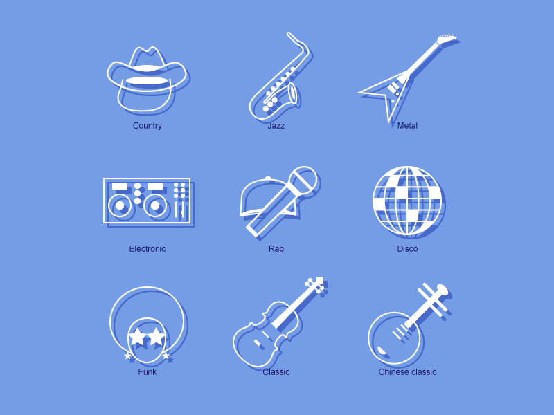

Bem-vindo ao Mundo da Música!
Aqui você vai encontrar a história, os artistas, os gêneros e curiosidades do mundo da música.
História da Música
Leia e Conheça fatos sobre a História da Música.
Artistas Famosos
Escute e Conheça alguns dos principais Artistas da Música.

Gêneros Musicais
Escute e Conheça alguns dos principais Gêneros Musicais.